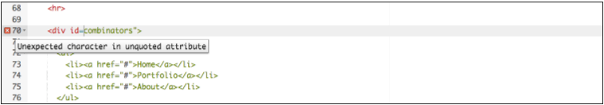

Linting - Analyze and format given code for syntax errors
- Linters
- Another good option to choose is a so-called Linter application, which not only points out errors, but can also flag up warnings about bad practices in your CSS, and other points besides. Linters can generally be customized to be stricter or more relaxed in their error/warning reporting
- There are many online linter applications, the best of which are probably,
- These allows you to paste your code into a window, and it will flag up any errors with crosses, which can then be hovered to get an error message informing you what the problem is. Dirty Markup also allows you to make fixes to your markup using the Clean button

However, it is not very convenient to have to copy and paste your code over to a web page to check its validity several times. What you really want is a linter that will fit into your standard workflow with the minimum of hassle. Click to Learn More